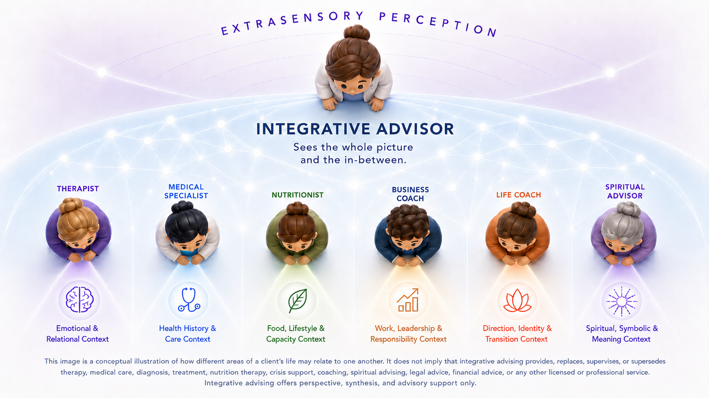

For questions, transitions, and recurring challenges that cannot be understood through one lens alone.
This practice was created for the space between categories — where a challenge is not purely personal, professional, relational, physical, emotional, or existential, but shaped by several dimensions at once.
With an academic foundation in Chemical Engineering, Nicole Yasmin brings a systems-oriented lens to her work: a disciplined way of seeing variables, constraints, relationships, and the larger structures that shape a situation.
Her advisory perspective is also deeply lived. After moving through a severe health crisis that conventional care could only partially explain, she spent years studying, experimenting, and rebuilding a way forward across disciplines. That process sharpened both her analytical capacity and her intuitive perception, including extrasensory abilities that had been present since childhood but became clearer through the experience.
Her work is further informed by leadership experience, close proximity to serious illness, refined pattern recognition, and a deep respect for what can be missed when a person's life is divided into separate categories.
This history is not offered as medical authority or a promise of outcome. It is the origin of a practice built around synthesis, discernment, and the ability to perceive what may be difficult to name from within a single frame.
From this lens, the ALIIA Method emerged: a structured, five-phase arc — moving from complexity into integration, refinement, and lived direction.
Persistent obstacles are rarely isolated issues.
They often live in the relationship between things: what is visible and what is unspoken, what has been tried and what remains unresolved, what a person knows intellectually and what their life keeps asking them to understand differently.
Integrative advising looks at the wider context surrounding a question or challenge, then helps clarify what may be keeping it in place and what kind of foundation is needed for what comes next.
The work is structural, intuitive, and deeply individualized. Each engagement is shaped around what the client is ready to see, strengthen, release, practice, or build.
